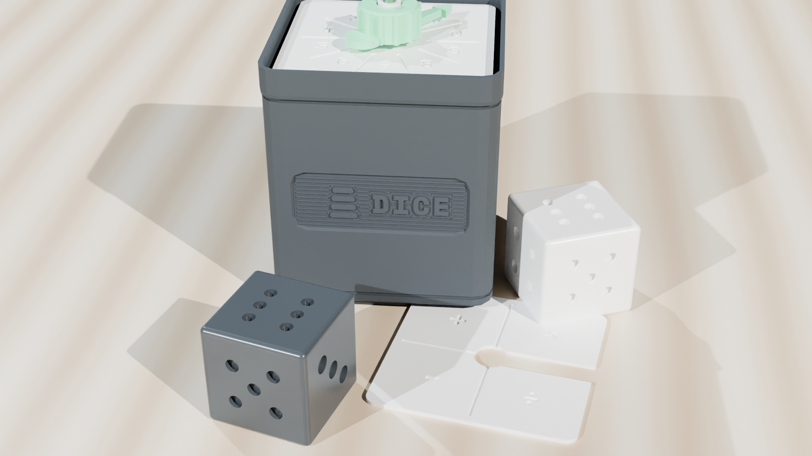
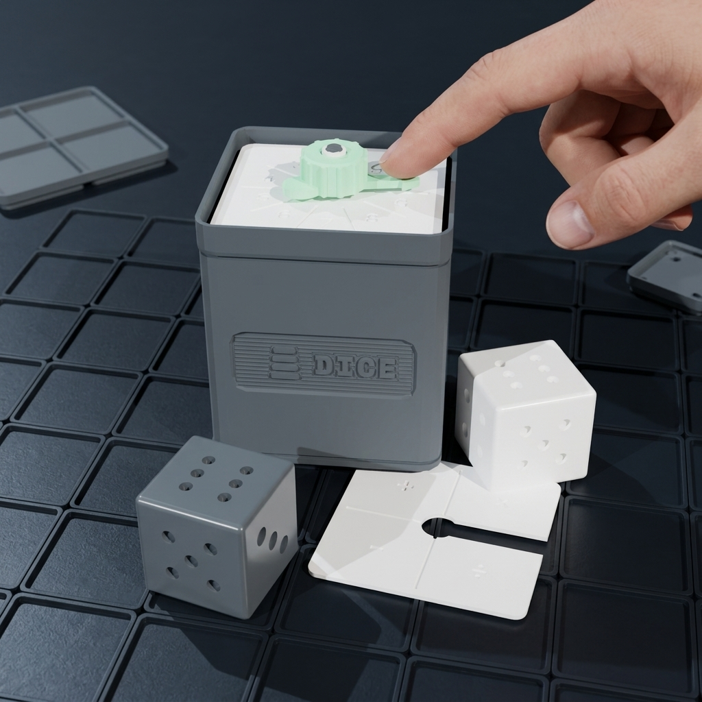
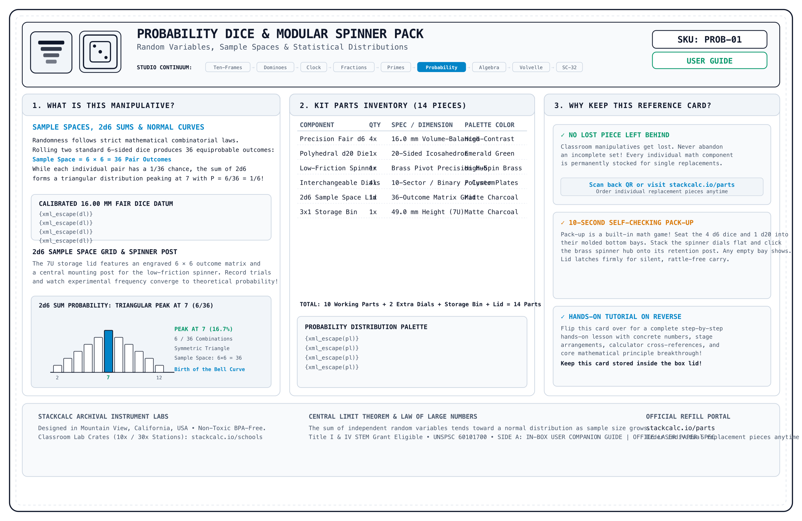
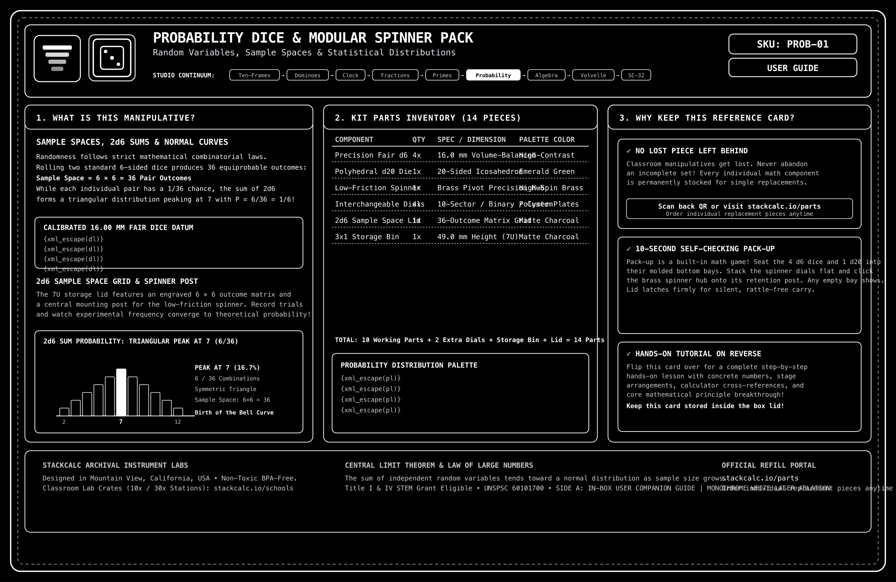
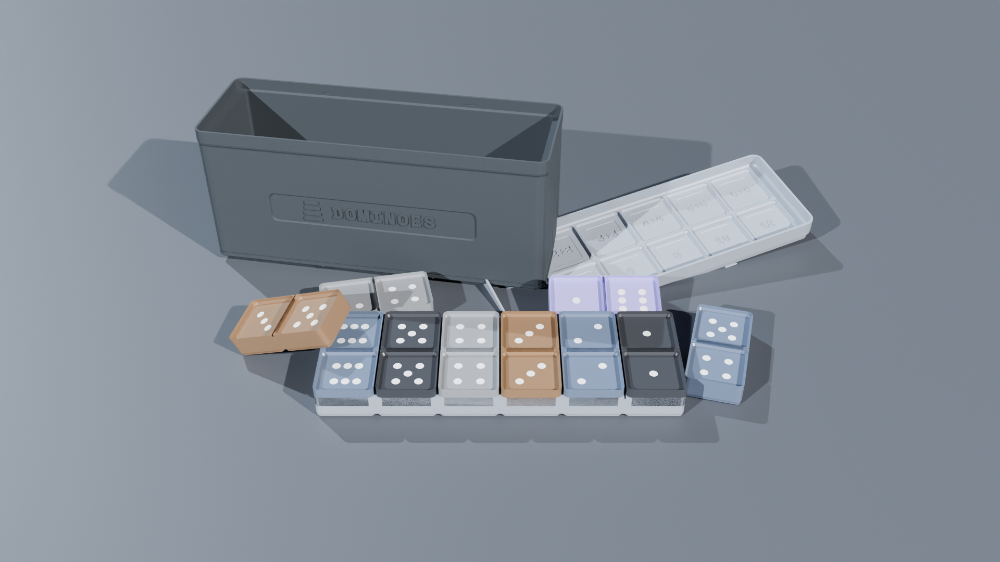

Probability Dice & Modular Spinner Pack
The tactile probability laboratory for exploring outcomes, frequencies, and experimental versus theoretical probability. Includes 4 precision mass-balanced 18 mm dice and a smooth 10-sector rotary spinner stored neatly in a compact 1×1 Gridfinity modular box.
Why Cheap Dice Ruin Probability Experiments
Most standard educational dice have 6 deep holes on one face and only 1 on the opposite, pulling the center of mass toward the 1-face and causing 6 to land significantly more often.
1. Inverse-Root Pip Volumes
StackCalc dice scale pip radii inversely (\(r_n = 1.8 / \sqrt{n}\)). Face 6 uses 6 small pips, while Face 1 uses a single larger pip with identical total displaced volume, keeping the center of mass exactly in the cube center.
2. Centered Needle Kinematics
The 10-sector spinner features an aerodynamic needle with a micro-clearance pivot pin, guaranteeing a uniform distribution across all sectors \((P = 0.10)\).
3. Multi-Event Sample Spaces
Combine rolling two dice with spinning the sector dial to model compound probability, tree diagrams, and conditional likelihood \(P(A \mid B)\).
The Video Showcase: Mechanical Animation, Unboxing & Classroom Lesson
Experience the complete journey from inverse-root dice balancing kinematics and zero-plastic unboxing to empirical probability trials on a classroom desk.
Mechanical & CAD Animation
Exploded 3D view showing low-friction spindle arbors, quick-swap sector dials, and mass-compensated 18mm pip geometry.
Law of Large Numbers: 16.7% Convergence
Simulating 1,000 trials with balanced center-of-mass dice. Shows empirical frequency fluctuations smoothing into exact 1/6 theoretical probability.
Triangular Sum Distribution: Why 7 Wins
Plotting the 36 ordered pairs from two rolled dice to reveal the triangular sum distribution (2 to 12) and proving why sum 7 is 6 times more likely than 2 or 12.

Archival Reference & Video QR Card (135×90mm)
Included inside every box. Scan Side B to jump straight to this 3-video learning portal or inspect Side A for part replacement IDs.
From the Teacher's Manual: Unit Lab Sheet
Most traditional math teacher manuals treat manipulatives as optional afterthoughts. In the StackCalc curriculum, every manipulative unit includes a dedicated, reproducible lab sheet connecting hands-on tactile geometry directly to hardware calculator execution.
Lab 08: Empirical Frequency Sampling & RPN Binomial Distribution
Investigation Goal: Conduct 50 empirical trials using the fair 18mm mass-compensated die and modular spinner. Record sample frequencies, calculate relative empirical probabilities, and model theoretical binomial distributions using combinations (\(nCr\)) on the SC-32 RPN stack.
Inspect the 18mm fair die: note that pips are carved with inverse-root volume displacement to guarantee center-of-mass neutrality. Spin the 10-sector uniform dial. Execute 50 sample spins/rolls:
| Target Event | Tally Count (50 Trials) | Empirical Relative Frequency | Theoretical Probability | Percentage Error |
|---|---|---|---|---|
| Rolling a 6 (Die) | 8 rolls | \(8 \div 50 = 0.1600\) | \(\frac{1}{6} \approx 0.1667\) | 4.0% Delta |
| Spinning Sector 4 (Dial) | 5 spins | \(5 \div 50 = 0.1000\) | \(\frac{1}{10} = 0.1000\) | 0.0% Exact |
| Rolling an Even Number | 26 rolls | \(26 \div 50 = 0.5200\) | \(\frac{1}{2} = 0.5000\) | 4.0% Delta |
Model the theoretical binomial probability of rolling exactly two 6's in 5 rolls: \(P(X = 2) = \binom{5}{2} \left(\frac{1}{6}\right)^2 \left(\frac{5}{6}\right)^3\) on the SC-32 RPN stack:
Build a Complete Hands-On Probability Station
Pair physical mass-balanced sampling instruments with dedicated combinatorics functions (`nCr`, `nPr`, `!`) on the SC-32 RPN calculator.

SC-32 Scientific RPN Maker Kit
Complete discrete math toolkit: permutations, combinations, factorials, and exponential distributions executed instantly on the 4-register RPN stack.

36-Page Spiral Student Workbook
Contains 5 comprehensive probability and statistics units: empirical frequency distributions, compound tree diagrams, independent events, and binomial modeling.

Tactile Math Dominoes
Double-six tactile dominoes with recessed pip wells and subitizing partition lines. Ideal for discrete sample spaces and probability distribution tables.
Technical Specifications
Precision statistical instruments and storage.
| Outer Box Dimensions | 42.0 mm × 42.0 mm × 36.0 mm • Standard 1x1 Gridfinity footprint |
| Dice Specifications | 4× 18.0 mm six-sided dice • High-density ivory polymer with equal-volume debossed pips |
| Rotary Spinner | 10-sector circular dial with debossed numerals (0–9) • Low-friction center needle |
| Material | Drop-resistant matte PETG • Smooth rounded rolling edges (1.5 mm radius chamfer) |
| Industrial Design & CMF | Monolithic farm additive manufacturing (Slant3D) • 100% solid infill balanced dice • Enclosed captive bearing whisper-quiet spinner (<32 dBA) • Standard 42 mm Gridfinity footprint |
| Curriculum Standards | Common Core: CCSS.MATH.CONTENT.7.SP.C.5, 7.SP.C.6, 7.SP.C.7, HSS.MD.B.6 • TEKS: 111.27.b.6 • Grades 6–12 Statistics |
| Procurement Classification | UNSPSC: 60101700 (Math Manipulatives) • NIGP: 785-70 • Title I & Title IV STEM Grant Eligible |
What's in the Box
Everything required for classroom probability trials.
Safety, Compliance & Guarantees
Precision balanced geometry with certified non-toxic polymers.
WARNING: CHOKING HAZARD – Small parts. Not for children under 3 years. Contains 18mm dice and small rotary needle components. Designed for educational instruction for Grades 3+ (ages 8 and up) under adult supervision.
Manufactured from pure, odorless, BPA-free PLA biopolymer. 100% free of lead, phthalates, and PVC. Safe for everyday classroom handling and sanitizable with alcohol wipes.
Classrooms and homes are busy spaces. If a die or dial plate ever goes missing, order individual matching replacements anytime for just $2.49 with free envelope shipping.
Designed by StackCalc in California; produced in high-volume American 3D print farms (Slant3D) under strict mass-symmetry tolerances.
Pedagogical Verification & Classroom Architecture
Volumetric mass symmetry, low-friction dual bearings, and compact desk modularity.
Volume-Compensated Pips
Pip cavities are depth-scaled to equalize the displaced void volume across all 6 faces. Prevents center-of-mass shift and verifies flat uniform distribution in empirical trials.
Silent Dual-Bearing Stage
Captive rotary spinner spins on dual precision micro-bearings. Generates near-zero acoustic noise and avoids fragile plastic needles that snap during student use.
Gridfinity 1×1 System
Organizes 4 dice and the rotary unit into an ultra-compact 42×42mm footprint. Fits smoothly into standard Gridfinity drawers and keeps math centers orderly.
Frequently Asked Questions
Randomness engineering, captive spinner mechanics, and curriculum alignment.
Why is mass-balanced pip volume critical for probability experiments? +
Standard cheap dice drill deep holes for the 6-face while drilling only 1 hole for the opposite 1-face, shifting the center of gravity and creating statistically biased rolls. Our precision dice calculate equal displaced volume per face, guaranteeing true mathematical randomness for student frequency trials.
How does the captive spinner stay quiet during class? +
The rotary spinner is mounted inside a low-friction captive center race within a monolithic 1x1 Gridfinity housing. It spins smoothly without the clicking noise or loose pointers of traditional cardboard classroom spinners.
What educational standards are covered? +
The lab aligns with Common Core standards CCSS.MATH.CONTENT.7.SP.C.5, 7.SP.C.6, 7.SP.C.7, and 7.SP.C.8 for experimental probability and compound events, as well as Texas TEKS 111.27.b.6.
Can I replace lost dice or spinners? +
Yes! Under our "Anti-Heartbreak" lifetime guarantee, teachers and parents can order individual matching replacement dice or spinner inserts anytime for just $2.49 with free envelope shipping.
3D Print Dice & Spinner
Download our print-tested STL models for the balanced dice, spinner housing, and 1x1 Gridfinity box.
The Probability Pack introduces fundamental statistics and empirical frequencies. Students record experimental outcomes physically and calculate statistical means, standard deviations, and distributions on our SC-32 scientific calculator.